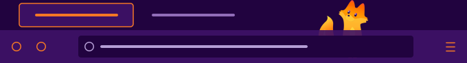

July 5, 2026
A Full-Page Overview for Every Firefox Window
I keep too many Firefox windows open — one per thing I'm in the middle of, each stuffed with tab groups I set up and then forgot. Firefox shows you one window's tabs at a time, but it has no single view where every window, group, and tab sits side by side so you can actually reorganize the pile. So I built one: a toolbar button toggles a single overview tab — an "exploded" layout of the whole browser — and re-toggling focuses that tab instead of piling up copies. The code's on GitHub.
What it does
Each panel is one window; tab groups show up as colored sub-sections, and every tab is a favicon–title–host tile. From here, without digging through right-click menus, you can:
- Rename a window — double-click its name. Firefox has no notion of a named window, so the name is stashed as a session value and rides back in on Firefox's own session restore after a restart.
- Reorder tabs by dragging — drop a tile inside a group to join that group, or into loose space to leave it. It moves the real tab, not a picture of one.
- Move tabs and groups between windows — drag onto another window's panel, or onto the bottom zone to pop it out into a brand-new window.
- Reorder the window panels — drag the
⠿grip in a header. That order is saved per window too, so the layout you arrange is still there after a restart. - Unload or close — discard a tab (or every tab but the active one, per window or across all windows from the masthead) to hand memory back without losing your place; or close a tab, a group, or a whole window outright.
Dressed in Art Deco, keyed to Firefox's mascot
Confession: I'm a sucker for cute. So when Mozilla's new Firefox mascot Kit turned up and I watched a bunch of people on Hacker News grumble that Mozilla shouldn't be "wasting their time" on a mascot, it stuck with me. Anything that makes somebody's day a little brighter is worth doing — full stop — and if your first instinct is to tell people they're wasting their time doing that, then I certainly don't have time to waste on you. I bought a Kit T-shirt.
The little fox is adorable, so I keyed this whole overview to this theme a fellow fan made.

The other half of it: I'm so sick of flat, Material-Design-looking everything. I want beautiful, complex things. Art Deco is one of my favorite styles on earth. I'm lucky enough to work in New York City, surrounded by some of the most classic Deco buildings ever built. Before I go on too much of a rant here: How Did the World Get So Ugly sums up the feeling better than I can.
So the look leans all the way into the ornament — an engraved trellis wall covering, a chevron frieze on the same
rhythm, corner brackets on every panel, lozenge-chain rules, and Futura
carrying the uppercase, letter-spaced Deco voice — over deep aubergine grounds, that vivid mascot orange on every
accent, lavender text. Every color is a light-dark()
pair, so the page follows your OS theme with no JavaScript at all — the shot below is the same overview in light mode.
Retheming is CSS-only: the whole look lives in custom properties at the top of one stylesheet, so a fork reskins it
without touching a line of logic.
light-dark() swap, no JS.Is it a loud, divisive palette? Sure. I like bright colors and they suit the adorable little fox, so I don't much care — and if my color choices personally offend you, well, you suck, and I'm delighted to have made your day a touch worse.
I won't pretend this is truly beautiful — I'm not a designer, and it's about as close to what I love as I could get with a few prompts to Fable. But I'd take it over anything Apple or Google has shipped in a heartbeat.
How it's built
The data flows one way: read the browser, fold it into a pure model, render, and let drag-and-drop and the
action buttons mutate the browser — whose own events kick off the next render. The model holds the only real logic, and
because it's pure it's the only part that needs unit tests (Node's built-in runner, zero dependencies). There's no build
step for day-to-day work; npm run package zips the installable .xpi when I want one.
It asks for exactly three permissions — tabs, tabGroups, sessions — and no host
permissions whatsoever. No fetch, no XHR, nothing phoning home; the only things pulled off the network are
the tab favicons, straight from each site. Tab groups do need
Firefox 139+ for the
tabGroups API — on anything older the overview still shows windows and tabs, with a notice that groups want
the newer build.
Right now it lives unsigned in my Developer Edition, which is happy to run it; getting Mozilla to sign it so it sticks on release Firefox is the next thing on the list. This is living documentation, so the page grows as the add-on does. And, if you'd like to use it but would like to put your own spin on it, don't worry: there's a theming guide in the README.